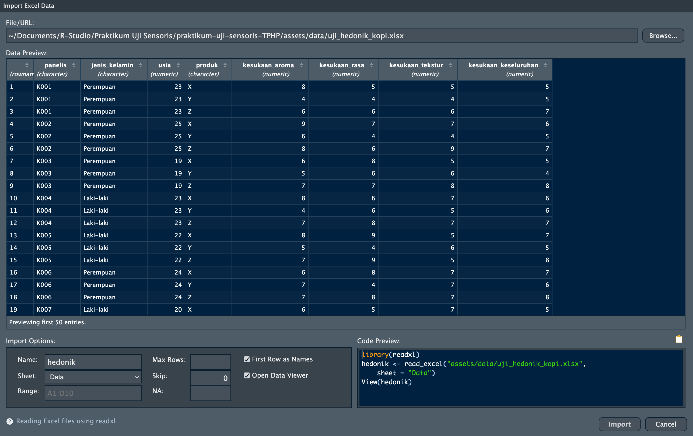
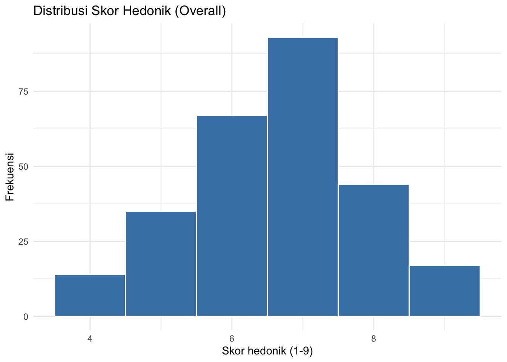
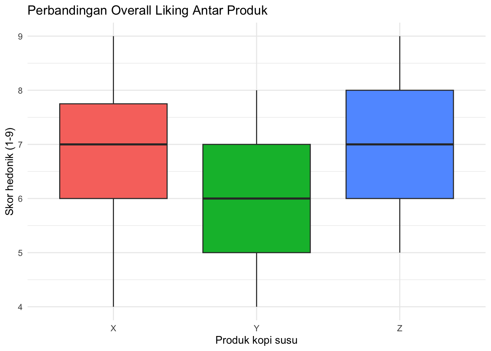

R.version.string[1] "R version 4.6.1 (2026-06-24)"RStudio untuk Uji SensorisInstalasi dan operasi dasar dengan data sensori
Setelah sesi ini, mahasiswa akan mampu:
| Mengetahui | Memahami | Melakukan |
|---|---|---|
Cara memasang R, RStudio, dan paket tambahan |
R menyimpan data sensori dalam objek yang dapat diperiksa, disubsetting, dan divisualisasikan | Memasang paket dengan install.packages() dan memuatnya dengan library() |
Operator assignment <- |
Struktur data uji sensoris: satu baris = satu panelis menilai satu produk | Memuat data hasil uji hedonik dari file Excel dengan read_excel() |
Tipe data (numeric, character, factor, data.frame) |
Mengapa kode panelis dan kode produk harus berupa factor, bukan angka |
Memeriksa struktur data dengan str() dan summary() |
Fungsi dasar: head(), str(), summary(), aggregate() |
Membuat histogram dan boxplot skor kesukaan dengan ggplot2 |
Terdapat dua program berbeda untuk melakukan data analisis pada RStudio. R adalah bahasa pemrograman, sedangkan RStudio adalah tempat kerja untuk menulis kode R. Pemasangan harus dimulai dengan R, kemudian dilanjutkan dengan RStudio. Jika RStudio dipasang terlebih dahulu, bahasa R tidak akan dapat terbuka.
| Komponen | Fungsi | Tautan unduh |
|---|---|---|
| R (versi 4.3 atau lebih baru) | Bahasa dan mesin perhitungan | https://cran.r-project.org/ |
| RStudio Desktop | Integrated Development Environment (IDE) tempat kita bekerja | https://posit.co/download/rstudio-desktop/ |
Pastikan install sesuai dengan operating system masing-masing.
RStudioSaat RStudio terbuka, Anda akan melihat empat panel:
| Panel | Lokasi | Fungsi |
|---|---|---|
| Console | Kiri bawah | Tempat R mengeksekusi kode dan menampilkan output |
| Source Editor | Kiri atas | Tempat menulis dan menyimpan script (.R) atau dokumen (.Rmd) |
| Environment | Kanan atas | Menampilkan objek yang ada di memori R |
| Files/Plots/Packages/Help | Kanan bawah | Navigasi file, melihat grafik, mengelola paket, dan dokumentasi |
Think-aloud: “Saya membuka
RStudiodan melihat empat panel. Kode dapat ditulis langsung di Source Editor dan Console. Kode pendek untuk mencoba-coba saya ketik di Console; tetapi semua langkah analisis data sensoris saya tulis di Source Editor dan saya simpan, supaya besok saya masih bisa menelusuri bagaimana angka pada laporan saya dihasilkan.”
Buka RStudio, lalu ketik perintah berikut di Console (panel kiri bawah):
R.version.string[1] "R version 4.6.1 (2026-06-24)"Jika muncul keterangan versi R, instalasi Anda berhasil.
Dalam R, kita menyimpan data dalam objek menggunakan operator assignment <-:
# Membuat objek bernama 'x' yang berisi angka 5
x <- 5
# Membuat objek bernama 'nama' yang berisi teks
nama <- "TPHP"
# Membuat objek bernama 'angka' yang berisi deret angka
angka <- c(1, 2, 3, 4, 5)
# Melihat isi objek
x[1] 5nama[1] "TPHP"angka[1] 1 2 3 4 5Dalam data sensoris, kita bisa juga mengisi data seperti contoh ini:
# Objek berisi satu angka: jumlah panelis
n_panelis <- 90
# Objek berisi teks: nama produk yang diuji
produk <- "Kopi susu X"
# Objek berisi deret angka: skor kesukaan dari 6 panelis (skala 1-9)
skor <- c(7, 8, 6, 9, 5, 7)
# Melihat isi objek
n_panelis[1] 90produk[1] "Kopi susu X"skor[1] 7 8 6 9 5 7Objek dapat langsung dihitung:
mean(skor) # rata-rata skor kesukaan[1] 7sd(skor) # simpangan baku[1] 1.414214length(skor) # banyaknya nilai[1] 6Mengapa
<-bukan=? Keduanya bisa digunakan, tetapi<-adalah konvensi R dan membuat kode lebih mudah dibaca.
Self-explanation prompts:
1. Apa bedanya mengetikmean(c(7, 8, 6))langsung, dibandingkan menyimpannya dulu sebagaiskor <- c(7, 8, 6)lalumean(skor)?
2. Apa yang terjadi pada isiskorjika kita menjalankanskor <- c(1, 2, 3)setelahnya?
R memiliki beberapa tipe data yang penting untuk diketahui:
# Numeric (angka)
skor <- c(7, 8, 6, 9)
class(skor)[1] "numeric"# Character (teks)
kode_panelis <- c("K001", "K002", "K003")
class(kode_panelis)[1] "character"# Factor (kategori)
kode_produk <- factor(c("X", "Y", "Z", "X", "Y"))
class(kode_produk)[1] "factor"levels(kode_produk)[1] "X" "Y" "Z"# Logical (TRUE/FALSE) - hasil perbandingan
suka <- skor > 6
suka[1] TRUE TRUE FALSE TRUEMengapa
factorpenting dalam uji sensoris? Kode produk sering ditulis dengan tiga digit angka acak (misalnya 384, 726, 951). Jika dibiarkan sebagainumeric, R akan mengira 951 “lebih besar” daripada 384 dan mencoba menghitung rata-ratanya — padahal itu hanya label. Ubahlah menjadifactorsebelum analisis:data$produk <- as.factor(data$produk).
Paket (package) adalah kumpulan fungsi tambahan R. Beberapa paket yang sering digunakan dalam analisis sensoris diantaranya:
| Paket | Kegunaan dalam praktikum |
|---|---|
ggplot2 |
Membuat grafik (histogram, boxplot, profil sensoris) |
dplyr |
Menyaring dan meringkas data |
tidyr |
Mengubah bentuk tabel (lebar ke panjang) |
readxl |
Membaca file Excel (.xlsx) ke dalam R |
FactoMineR |
Analisis multivariat, termasuk PCA |
factoextra |
Memvisualisasikan hasil PCA |
agricolae |
Uji lanjut (post-hoc) dengan notasi huruf |
Jalankan perintah berikut satu kali saja di Console (bukan di dalam dokumen, karena tidak perlu diulang setiap knit):
install.packages(c("ggplot2", "dplyr", "tidyr", "readxl",
"FactoMineR", "factoextra", "agricolae"))Setelah terpasang, paket harus dimuat setiap kali sesi R dimulai:
library(ggplot2)
library(dplyr)
library(readxl)Analogi:
install.packages()seperti membeli peralatan masak yang kemudian di simpan di dalam dapur.library()seperti mengambil peralatan masak yang dibutuhkan (e.g. panci, blender, pisau, dll).
Pesan galat yang sering muncul:
Error in library(ggplot2) : there is no package called 'ggplot2'berarti paket belum dipasang, bukan berarti kode Anda salah. Jalankaninstall.packages("ggplot2")terlebih dahulu. Jika ada pesan ini lagi, kuncinya adalah memasukkan library yang diminta melaluiinstall.packages("NAMA LIBRARY")
Untuk melihat apa saja yang R bisa lakukan, kita akan menggunakan data imajiner uji hedonik tiga produk kopi susu kemasan (X, Y, Z) oleh 90 panelis konsumen. Setiap panelis mencicip ketiga produk dan memberi skor pada skala hedonik 9 titik (1 = sangat tidak suka, 9 = sangat suka).
Data praktikum biasanya disimpan dalam file Excel. Pada contoh ini, file disimpan pada uji_hedonik_kopi.xlsx. File tersebut memiliki dua lembar (sheet): Data berisi angkanya, dan Keterangan berisi penjelasan setiap kolom. Bacalah lembar Keterangan terlebih dahulu.
Terdapat 2 cara dalam membaca file:
Cara Manual
Dilakukan dengan klik Import Dataset (di bagian kolom Environment) > From Excel > Browse > Ubah Name: hedonik > Ubah Sheet: Data > Copy Code yang bertulisan seperti ini: hedonik <- read_excel("LOKASI FILE ANDA/uji_hedonik_kopi.xlsx", sheet = "Data") ke Source Code agar file dapat dengan mudah diakses kembali.

Cara Automatis
Pastikan file uji_hedonik_kopi.xlsx Anda sudah berada pada folder yang sesuai sehingga dapat langsung dipanggil kembali.
hedonik <- read_excel("assets/data/uji_hedonik_kopi.xlsx", sheet = "Data")
# Ubah menjadi data.frame biasa agar output R lebih mudah dibaca
hedonik <- as.data.frame(hedonik)Mengapa perlu
sheet = "Data"? Tanpa argumen itu, R akan membaca lembar pertama. Menuliskannya secara eksplisit membuat kode Anda tetap benar walaupun urutan lembar berubah.
Tiga kesalahan yang paling sering terjadi saat input di Excel:
1. Desimal ditulis dengan koma (7,5). R akan membacanya sebagai teks, bukan angka. Gunakan titik (7.5), atau ubah pengaturan regional Excel Anda.
2. Judul kolom lebih dari satu baris, atau ada baris kosong dan judul praktikum di atas tabel. Baris pertama harus langsung berisi nama kolom.
3. Nama kolom mengandung spasi (kesukaan rasa). R akan mengubahnya menjadi`kesukaan rasa`yang merepotkan. Gunakan garis bawah:kesukaan_rasa.
# Melihat 6 baris pertama
head(hedonik)# Melihat struktur lengkap data
str(hedonik)'data.frame': 270 obs. of 8 variables:
$ panelis : chr "K001" "K001" "K001" "K002" ...
$ jenis_kelamin : chr "Perempuan" "Perempuan" "Perempuan" "Perempuan" ...
$ usia : num 23 23 23 25 25 25 19 19 19 23 ...
$ produk : chr "X" "Y" "Z" "X" ...
$ kesukaan_aroma : num 8 4 6 9 6 8 6 5 7 8 ...
$ kesukaan_rasa : num 5 4 6 7 4 6 8 6 7 6 ...
$ kesukaan_tekstur : num 5 4 6 7 4 9 5 6 8 7 ...
$ kesukaan_keseluruhan: num 5 5 7 6 5 7 5 4 8 6 ...# Ringkasan statistik
summary(hedonik) panelis jenis_kelamin usia produk
Length :270 Length :270 Min. :18.00 Length :270
N.unique : 90 N.unique : 2 1st Qu.:19.00 N.unique : 3
N.blank : 0 N.blank : 0 Median :21.00 N.blank : 0
Min.nchar: 4 Min.nchar: 9 Mean :21.18 Min.nchar: 1
Max.nchar: 4 Max.nchar: 9 3rd Qu.:23.00 Max.nchar: 1
Max. :25.00
kesukaan_aroma kesukaan_rasa kesukaan_tekstur kesukaan_keseluruhan
Min. :2.000 Min. :2.00 Min. :3.000 Min. :4.000
1st Qu.:6.000 1st Qu.:6.00 1st Qu.:6.000 1st Qu.:6.000
Median :7.000 Median :7.00 Median :7.000 Median :7.000
Mean :6.644 Mean :6.67 Mean :6.641 Mean :6.626
3rd Qu.:8.000 3rd Qu.:8.00 3rd Qu.:8.000 3rd Qu.:7.000
Max. :9.000 Max. :9.00 Max. :9.000 Max. :9.000 Think-aloud: “Saya menjalankan
str(hedonik)dan melihat 270 observasi. Angka ini masuk akal: 90 panelis × 3 produk = 270 baris. Kalau yang muncul hanya 90 baris, berarti datanya berformat lebar dan perlu saya ubah dulu. Saya juga melihatprodukmasih bertipechr, jadi saya perlu mengubahnya menjadifactor.”
# Mengubah kolom kategorikal menjadi factor
hedonik$produk <- as.factor(hedonik$produk)
hedonik$jenis_kelamin <- as.factor(hedonik$jenis_kelamin)
str(hedonik)'data.frame': 270 obs. of 8 variables:
$ panelis : chr "K001" "K001" "K001" "K002" ...
$ jenis_kelamin : Factor w/ 2 levels "Laki-laki","Perempuan": 2 2 2 2 2 2 2 2 2 1 ...
$ usia : num 23 23 23 25 25 25 19 19 19 23 ...
$ produk : Factor w/ 3 levels "X","Y","Z": 1 2 3 1 2 3 1 2 3 1 ...
$ kesukaan_aroma : num 8 4 6 9 6 8 6 5 7 8 ...
$ kesukaan_rasa : num 5 4 6 7 4 6 8 6 7 6 ...
$ kesukaan_tekstur : num 5 4 6 7 4 9 5 6 8 7 ...
$ kesukaan_keseluruhan: num 5 5 7 6 5 7 5 4 8 6 ...Sebelum melanjutkan, coba jawab pertanyaan berikut: Data uji hedonik Anda memiliki 270 baris, sedangkan panelisnya hanya 90 orang. Apa artinya?
- Ada 180 baris data yang terduplikasi dan harus dihapus
- Setiap panelis menilai lebih dari satu produk, sehingga satu panelis mengisi beberapa baris
- Datanya salah input
- Ada 270 panelis yang sebagian tidak tercatat namanya
Jawaban: B. Satu baris = satu kombinasi panelis × produk. Ini disebut format panjang (long format) dan merupakan bentuk yang dibutuhkan R untuk analisis.
# Mengambil satu kolom dengan $
hedonik$kesukaan_keseluruhan[1:10] # 10 nilai pertama [1] 5 5 7 6 5 7 5 4 8 6# Mengambil baris dan kolom dengan [ ]
hedonik[1:5, ] # 5 baris pertama, semua kolomhedonik[1:5, c("produk", "kesukaan_rasa")]# Menyaring baris dengan library dplyr dengan fungsi filter()
produk_X <- filter(hedonik, produk == "X")
head(produk_X)nrow(produk_X)[1] 90Inilah operasi yang paling sering Anda butuhkan pada data sensoris: menghitung rata-rata skor untuk setiap produk.
# Cara dasar (base R)
aggregate(kesukaan_keseluruhan ~ produk, data = hedonik, FUN = mean)Anda bisa mengubah-ubah bagian
kesukaan_keseluruhandengan variabel lainnya sepertikesukaan_aromadan sebagainya. Coba yuk!
# Cara library dplyr - lebih fleksibel karena bisa beberapa statistik sekaligus
hedonik %>%
group_by(produk) %>%
summarise(
n = n(),
rerata = round(mean(kesukaan_keseluruhan), 2),
sd = round(sd(kesukaan_keseluruhan), 2)
)Catatan: rata-rata saja belum cukup untuk menyimpulkan bahwa satu produk lebih disukai daripada yang lain. Selisih 0,3 poin bisa saja muncul karena kebetulan. Untuk menguji apakah selisih itu nyata, kita memerlukan ANOVA.
ggplot2ggplot(hedonik, aes(x = kesukaan_keseluruhan)) +
geom_histogram(binwidth = 1, fill = "steelblue", color = "white") +
labs(title = "Distribusi Skor Hedonik (Overall)",
x = "Skor hedonik (1-9)",
y = "Frekuensi") +
theme_minimal()
ggplot(hedonik, aes(x = produk, y = kesukaan_keseluruhan, fill = produk)) +
geom_boxplot() +
labs(title = "Perbandingan Overall Liking Antar Produk",
x = "Produk kopi susu",
y = "Skor hedonik (1-9)") +
theme_minimal() +
theme(legend.position = "none")
Think-aloud (I Do): “Dalam
ggplot2saya selalu mulai denganggplot(data, aes(...))untuk menentukan data dan pemetaan sumbu, lalu menambahkan layer dengan tanda+.geom_histogram()untuk sebaran satu variabel,geom_boxplot()untuk membandingkan kelompok. Dari boxplot ini saya sudah bisa menduga produk Y paling tidak disukai, tetapi dugaan itu masih perlu diuji secara statistik.”
hedonik <- as.data.frame(read_excel("assets/data/uji_hedonik_kopi.xlsx",
sheet = "Data"))
str(hedonik)
summary(hedonik)table(hedonik$jenis_kelamin)range(hedonik$usia)kesukaan_rasa untuk setiap produk.hedonik %>%
group_by(produk) %>%
summarise(rerata = mean(kesukaan_rasa),
sd = sd(kesukaan_rasa))kesukaan_aroma per produk. Apakah urutan produknya sama dengan urutan pada kesukaan_keseluruhan?ggplot(hedonik, aes(x = produk, y = kesukaan_aroma, fill = produk)) +
geom_boxplot() +
labs(x = "Produk", y = "Kesukaan aroma (1-9)") +
theme_minimal() +
theme(legend.position = "none")kesukaan_keseluruhan per produk yang dipisahkan berdasarkan jenis kelamin (petunjuk: tambahkan facet_wrap(~ jenis_kelamin)).kesukaan_rasa (sumbu x) dan kesukaan_keseluruhan (sumbu y), diberi warna menurut produk. Atribut mana yang tampak paling menentukan kesukaan keseluruhan?Dalam sesi ini kita telah mempelajari:
- Memasang R, RStudio, dan paket tambahan dengan install.packages() serta memuatnya dengan library()
- Objek dan assignment dengan <-
- Tipe data dasar: numeric, character, factor, logical, dan mengapa kode produk harus berupa factor
- Membaca data sensoris dari file Excel dengan read_excel() dan memeriksanya dengan str(), summary(), head()
- Format panjang: satu baris = satu panelis menilai satu produk
- Subsetting dengan $, [ ], dan dplyr::filter()
- Meringkas per produk dengan aggregate() dan group_by() + summarise()
- Visualisasi dasar dengan ggplot2: histogram dan boxplot
Pada sesi berikutnya kita akan menggunakan kemampuan ini untuk menganalisis data Quantitative Descriptive Analysis (QDA) dengan ANOVA, uji lanjut, dan PCA.